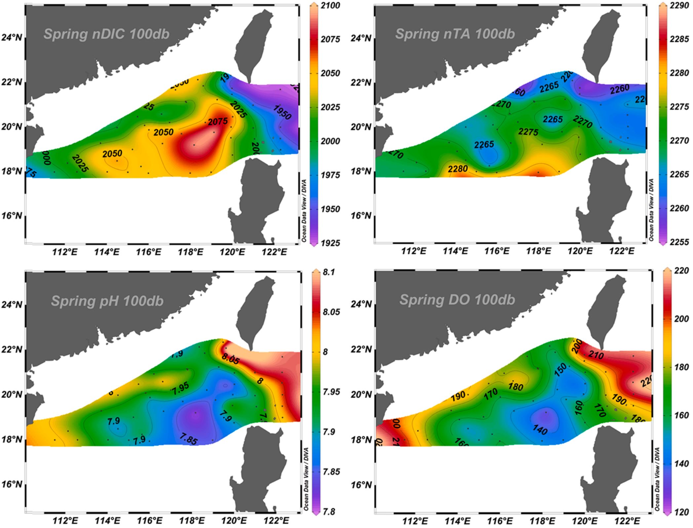

The carbonate system of the northern South China Sea: Seasonality and exchange with the western North Pacific
Journal: Progress in Oceanography (2021)

Using the most comprehensive, high quality, high-resolution dataset for any marginal sea up to depths >2000 db, we examined the seasonality of the carbonate system in the northern South China Sea (nSCS) and exchange with the West Philippine Sea (WPS) during 2009–2011. The carbonate system dynamics demonstrated evident spatial and seasonal variations. Winter exhibited the highest average surface dissolved inorganic carbon (DIC) concentrations (1936 ± 15 μmol kg−1), and summer had the lowest (1882 ± 12 μmol kg−1), primarily associated with more abundant freshwater inputs in summer. At 100 db depth, decreased DIC and total alkalinity (TA) values were observed within the Luzon Strait vicinity due to the influence of WPS waters. Higher DIC and TA concentrations were found within the central nSCS basin. The average Kuroshio contribution to the DIC inventory in the upper 150 db was seasonally significant, ranging between 11 and 32%, with the highest contributions during spring and winter. Below 2000 db, nSCS basin-averaged DIC was significantly higher than WPS-averaged DIC (∼23 µmol kg−1 difference) due to more organic matter decomposition in the nSCS basin. Within the basin, average deep water DIC values were highest in autumn, and averaged concentrations at >18.5°N were lower than at ≤18.5°N. Our datasets and analysis imply that (i) the significant seasonal and spatial patterns of carbonate chemistry in the nSCS are controlled by a combination of large-scale and smaller mesoscale physical processes; (ii) extrinsically from Asian monsoons via seasonal freshwater discharge and dynamic exchanges with open ocean waters; and (iii) intrinsically, through seasonal vertical mixing as well as mesoscale processes and their subsequent new productions. The seasonal and spatial variability in carbonate parameters established here serves as an essential baseline to monitor future changes to the nSCS and to compare with other marginal sea systems.
Dynamics of dissolved inorganic carbon in the South China Sea: A modeling study
Journal: Progress in Oceanography (2020; as coauthor)

Using a validated, three-dimensional, coupled physical-biogeochemical model, this study examines the dynamics of dissolved inorganic carbon (DIC) in the South China Sea (SCS). The model identifies characteristic differences in DIC concentrations between the SCS and adjacent West Philippine Sea (WPS), showing an increase in DIC of up to 140 μmol kg−1 in the upper 2000 m layer from the WPS to the vicinity of the northern SCS. This increasing pattern continues from the northern to the southern SCS, but to a much lower degree (< 20 μmol kg−1 increase). Overall, spatial and seasonal variation of DIC in the SCS are evidently modulated by both intrinsic dynamics (e.g., river plumes, vertical mixing, basin-scale upwelling and eddies), and extrinsic exchanges via various straits. The inputs of DIC to the SCS are mainly through the Luzon Strait in the upper layer (depth, h < 600 m) and from the deep WPS at > 1600 m. Exports of DIC occur through other straits and the SCS intermediate water outflow (600 m to 1600 m) via the Luzon Strait. The model shows upward transport of DIC in the upper 400 m and below 1100 m, in contrast to downward DIC transport between 400 m and 1100 m. Seasonally, both DIC concentrations and fluxes in the upper layer have larger dynamic ranges in winter than in summer, attributable to the combined effects of enhanced Kuroshio intrusion, stronger vertical upwelling and greater biogeochemical alterations.
A balance of various constitutive DIC terms revealed that horizontal and vertical advection is an order of magnitude greater than the other terms of the DIC budget, which has an opposite sign and thus tends to neutralize each other. The model indicated a decrease in the DIC inventory in the euphotic zone in spring and summer caused by net DIC consumption, and a contrasting increase in fall and winter primarily influenced by DIC vertical transport. In intermediate and deep layers, physical transport processes play a dominant role in the seasonal variation of DIC inventories. In the upper 150 m, DIC fluxes and their stoichiometry with nutrient fluxes, which potentially impact the air-sea CO2 fluxes, are largely driven by excess vertical DIC fluxes compared to horizontal fluxes via the Luzon Strait.